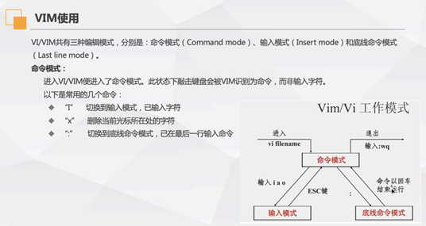

# Vim 使用：

# vim 三种编辑模式：
Vi/VIM 编辑模式：
1. 命令模式 (COmmand mode):
"i" 切换到输入模式，然后输入字符
"x" 删除当前光标所在处的字符
": " 进入命令模式。已在最后一行输入命令
2. 输入模式 (Insert mode)
3. 底线命令模式 (Last linemode)
vi/vim 文件名.txt   // 编辑当前目录该文件名的文件内容，若该目录无此名文件 则会创建一个文件
进入 Vim 编辑器后，按 "i","a","o" 可进入到输入模式，在编辑模式中，左下角会显示 --INSERT-- 字样，如果需要退出的话，按键盘的 "ESC" 键退出编辑模式 返回到一般模式。按 ":" 建 在输入 wq 即可保存并退出编辑。
# vim 的保存退出以及强制保存退出:
:wq // 保存并退出
:q  // 退出（不会保存）
:w  // 保存
:q!   // 强制退出
:w！  // 强制保存
:wq!   // 强制保存并退出
| 光标移动方法 | 作用 |
|---|---|
| [Ctrl]+[f] | 屏幕 [向下] 移动一页 |
| [Ctrl]+[b] | 屏幕 [向上] 移动一页 |
| 0 / [Home] | 这是数字 [0]，移动到这一行的最前面字符处 |
| $ / [End] | 移动到 这一行的最后字符处 |
| G | 移动到这个档案的最后一行 |
| gg | 移动到这个档案的第一行 |
| n<Enter> | n 为数字，光标向下移动 n 行 |
| 搜索替换指令 | 作用 |
|---|---|
| /word | 向光标往下寻找一个名为 word 的字符串 |
| ?word | 向光标往上寻找一个名为 word 的字符串 |
| n | 这个 n 是英文按键，代表重复前一个搜寻动作 |
| N | 这个 N 是个英文按键，与 n 相反，为 [反向] 进行前的一个搜寻动作 |
| :n1,n2s/word1/word2/g | n1 与 n2 为数字。在第 n1 与 n2 之间寻找 word1 这个字符串，并将该字符串取代为 word2 |
| :1,$s/word1/word2/g 或者:% s/word1/word2/g | 从第一行到最后一行寻找 word1 字符串，并将字符串代替为 word2 |
| :1,$s/word1/word2/gc 或者:% s/word1/word2/gc | 从第一行到最后一行寻找 word1 字符串，并将字符串代替为 word2 |
| 删除、复制与粘贴方法 | 作用 |
|---|---|
| x,X | 在一行字当中，x 为向后剪切一个字符，X 为向前剪切一个字符 |
| dd | 剪切游标所在的那一整行 |
| ndd | n 为数字。删除光标所在的向下 n 行。 |
| yy | 复制游标所在的那一行 |
| nyy | n 为数字，复制光标所在的向下 n 行 |
| p,p | p 为将已复制的数据在光标下一行贴上，P 则为贴在光标上一行 |
| v | 移动光标选中内容，复制选中内容 |
| u | 复原前一个动作 |
| [Ctrl]+r | 重复上一个动作 |
| . | 这是一个小数点，意思是重复前一个动作的意思 |